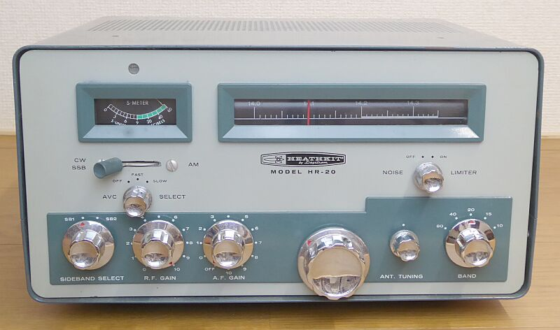
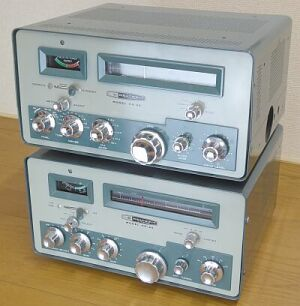
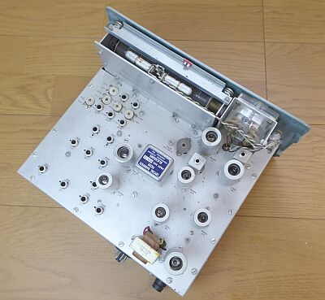
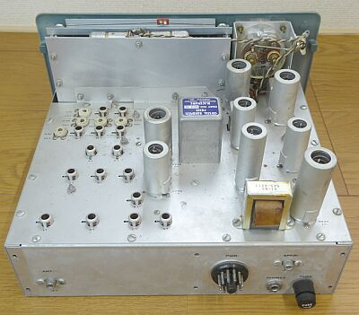
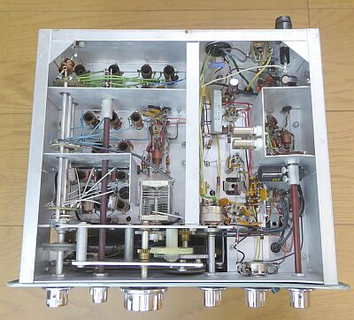
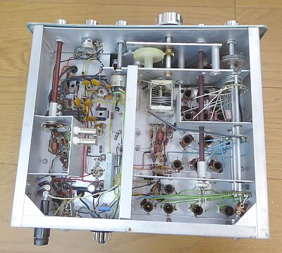

 |
３．５～２８ＭＨｚ帯をカバーするアマチュア無線専用受信機です
サイズは、１５５Ｈ ｘ ３０８Ｗ x ２５０D で、重量は約７．６Ｋｇです |
１９６２年発売の製品です
３．５ＭＨｚ帯～２８ＭＨｚ帯 ＨＦ５バンドをカバーする、８球構成のアマチュア無線専用レシーバです
１９５９年から販売されていた ＭＲ-１/Ｃｏｍａｎｃｈｅ と極めてよく似ています（同じ筐体！）
ＭＲ-１とは、ＡＭ検波、ＡＧＣ、ＮＬに使われているもの、オーディオ段に使われているもの、２本の真空管は異なりますが、回路構成と球数で言えば同じ８球構成です
ＭＲ-１は、ＭＴ-１/Ｃｈｅｙｅｎｎｅ という、ＡＭ／ＣＷ送信機とセットになっていたものです
電源供給は、専用電源から送信機を経由して給電されます
モバイルニーズを想定したもののようで、このような方式がとられています
このことは、本機シリーズにも継承されています
Ｈｅａｔｈ-Ｋｉｔとして、最初に製品化したモバイル対応のＳＳＢ送信機ＨＸ-２０とペアで用意された受信機です
ＭＲ-１との違いは、大きくは次の３点
１．プロダクト検波のＢＦＯが、ＬＣからクリスタルへ
２．ＡＧＣ切り替えが、ＯＦＦ－ＯＮから、ＯＦＦ－ＦＡＳＴ－ＳＬＯＷへ、２段から３段切替に
３．ＤＣ１２Ｖ運用時、オシレータ管（ＶＦＯと表記されています/６ＥＡ８）のヒーターを定電圧化
車載時におけるバッテリ電圧の変化の影響を避ける目的でしょう
いずれもＳＳＢをより強く意識した内容となっています
が、まだコリンズタイプのダブルスーパー構成にはなっていません
中間周波数３ＭＨｚを採用した、高１中２のシングルコンバージョン方式です
きちんと、３ＫＨｚ（－６ｄｂ） １０ＫＨｚ（－６０ｄｂ）のクリスタルフィルタが採用してあります
ＳＳＢ黎明期の製品です |
|
 |
左写真上は、ペアとして用意されていた送信機
ＨＸ-２０です
ＨＲ-２０と、上下に重ねてベンチシートの車にセットするイメージです
ＵＳのベンチシート車ならこその設定です
この時代から、ＨＦそれもＳＳＢモバイル運用をという設定は、いかにも自動車社会の進んだＵＳらしいことでしょう
しかし、どちらがどちらか、ぱっと見では見分けがつきません
|
|
|
 |
シャーシ上面
バンド切替ごとに、メインダイヤル表示部が回転して各バンドを横に目いっぱい展開します
ダイヤル構造については、こちらのＨＧ-１０Ｂを参考に、よく似ています
|
 |
シャーシ上面
リアから
電源も内蔵せず、とてもシンプルです
３ＭＨｚクリスタル・フィルタが大きく見えます
ＵＳソケットは、相棒の送信機 ＨＸ-２０より給電を受けるためのものです
電源ソケットは、１１Ｐです |
 |
シャーシ底面
一部コンデンサは交換済みです
右サイドにＢＦＯ／クリスタルが見えます
ＶＦＯ（自励発振部）の構造については、こちらのＨＧ-１０Ｂに、よく似ています
写真ではわかりづらいですが、中央シールド版にＶＦＯ（オシレータ）用６ＥＡ８のヒーター安定化のためのトランジスタとツェナーダイオードが見えています
|
 |
シャーシ底面
リアから |
| |
| ＢＡＮＤ（ＭＨｚ） |
ＡＭ
３０％ １ＫＨｚ 変調ＯＮ／ＯＦＦで
S/N１０ｄｂが得られる信号強度 |
ビート受信（ＣＷ／ＳＳＢ）
ＲＦ信号のＯＮ／ＯＦＦで
S/N１０ｄｂが得られる信号強度 |
| ３．５ |
μV |
μV |
| ７ |
μV |
μV |
| １４ |
μV |
μＶ |
| ２１ |
μＶ |
μＶ |
| ２８ |
μＶ |
μＶ |
|
|
|
電源を外付けにしている点などから、とてもコンパクトにまとめられた受信機だと思います
このくらいのスペースと部品数であれば、しっかりしたＨｅａｔｈ-ｋｉｔのマニュアルで、何ら問題なく組み立てられると思います
ＳＳＢ黎明期を語るには、ＨＸ-２０共々とても良い素材かと思います
が、実用で言えば、シングルスーパー方式の限界…周波数安定度、そして送信機とのトランシーブ操作にかなうはずもなく、トランシーバの登場で一気に商品価値はなくなったのではないかと、容易に想像がつきます
しかし、国内では９Ｒ-５９／ＴＸ-８８ＡがヒットしたＡＭ全盛時代に、ＵＳではＳＳＢ機がキットで入手できる時代を迎えていたことには、当時の技術レベルの差を感じざるを得ません
余談ですが、日本で初級ハムに、２１／２８ＭＨｚ帯が解放されたのは、１９６１年／昭和３６年です |